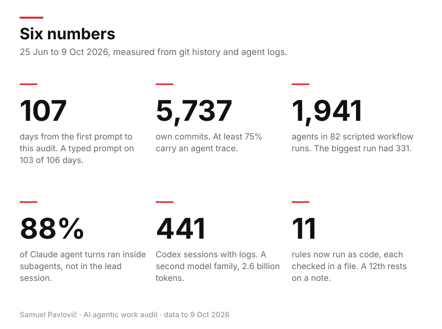
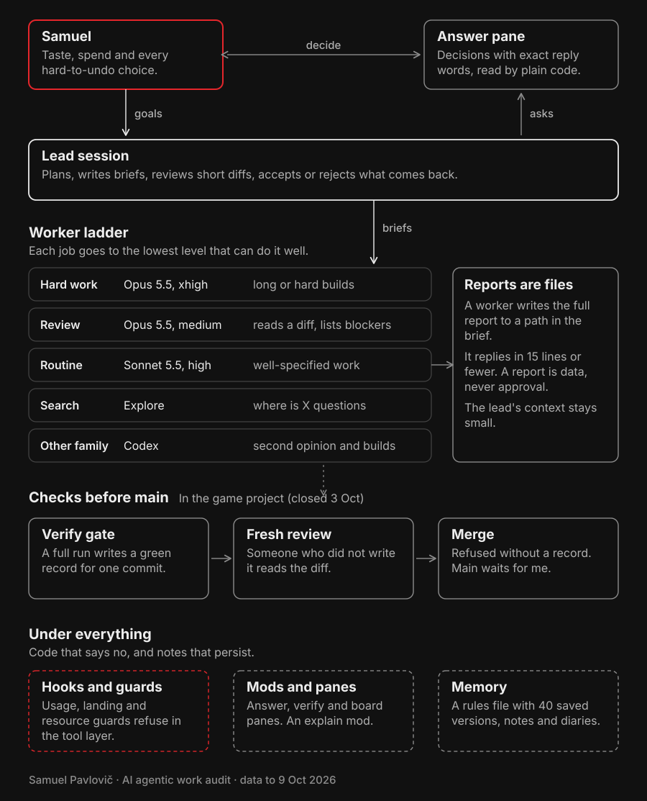
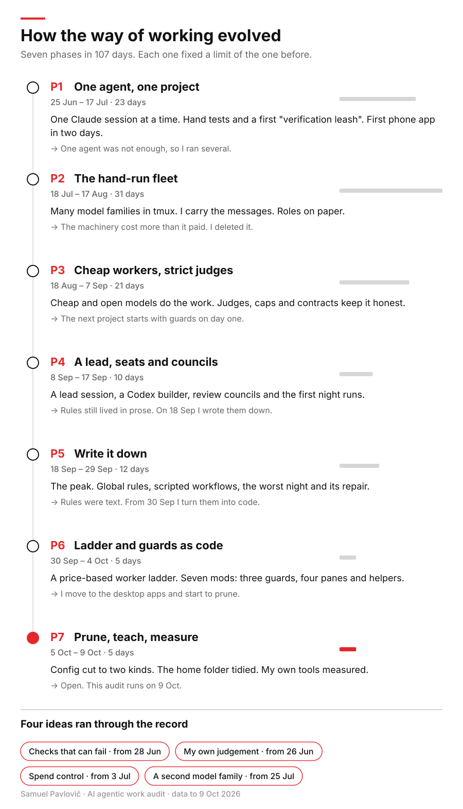
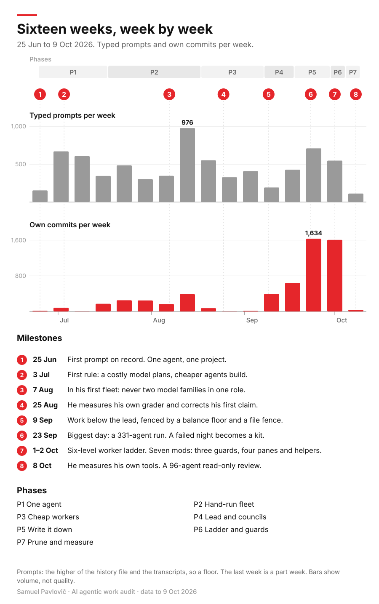
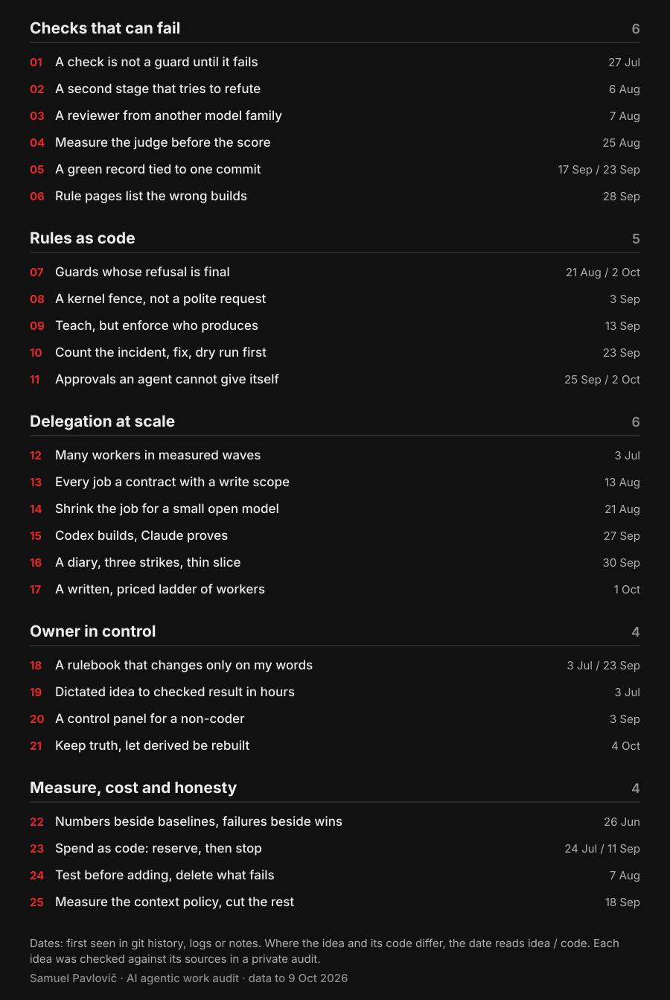
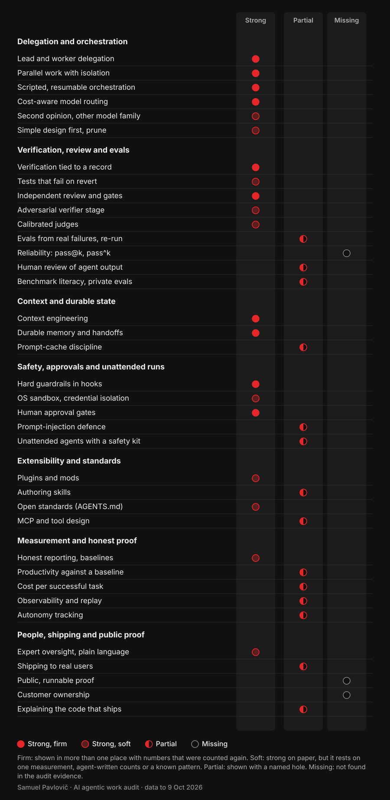
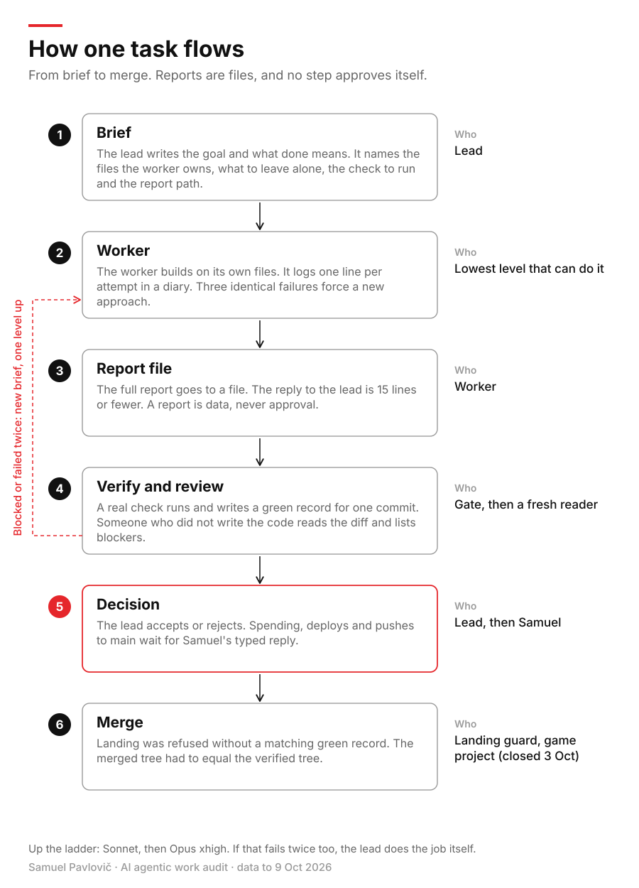

Samuel Pavlovič · student and solo developer · Case study, 25 Jun – 9 Oct 2026
I direct AI agents, and I adapt as they get better.
For 107 days I worked with AI coding agents, almost every day. I did not build the gates, guards and tests myself: I asked the agents to check their own work, and with every better model version they did more of it on their own. My part was to notice each change and adapt my workflow to it. This page is the result of a large-scale audit of my entire work with AI agents. I made it by deploying a large agent workflow across my whole portfolio, on GitHub and on my computer.
Scale
Six numbers
Measured from git history and agent logs, 25 Jun to 9 Oct 2026.
107
days
from the first prompt (25 Jun) to this audit (9 Oct 2026). A typed prompt on 103 of 106 days.
5,737
own commits
At least 75% carry an agent trace. That share is a floor.
1,941
agents
in 82 scripted workflow runs. The biggest run had 331 agents.
88%
of agent turns
ran inside subagents, not in the lead session.
441
Codex sessions
A second model family: 2.6 billion tokens, 19 Sep to 8 Oct.
23
real decisions
closed by my own typed reply through a decision pane, in three days.

The same numbers as a picture.
The system
How I direct agents
Work flows down. Short reports flow up. Under everything sits code that says no, and notes that persist.

Samuel
Taste, spend and every hard-to-undo choice.
Answer pane
Decisions with exact reply words, read by plain code.
Lead session
Plans, writes briefs, reviews short diffs, accepts or rejects what comes back.
Worker ladder
Each job goes to the lowest level that can do it well.
Hard work · Opus 5.5, xhigh · long or hard builds
Review · Opus 5.5, medium · reads a diff, lists blockers
Routine · Sonnet 5.5, high · well-specified work
Search · Explore · "where is X" questions
Other family · Codex · second opinion and builds
Reports are files
A worker writes the full report to a path in the brief and replies in 15 lines or fewer. A report is data, never approval. The lead's context stays small.
Checks before main
Verify gate · a full run writes a green record for one commit
Fresh review · someone who did not write it reads the diff
Merge · in the game project (closed 3 Oct): refused without a record. Main waits for me.
Under everything
Hooks and guards · usage, landing and resource guards refuse in the tool layer
Mods and panes · answer, verify and board panes. An explain mod.
Memory · a rules file with 40 saved versions, notes and diaries
My agent system today: work flows down, short reports flow up.
Evolution
Seven phases in 107 days
Each phase fixed a limit of the one before.

P1
One agent, one project
25 Jun – 17 Jul
One Claude session at a time. I test by hand. First phone app in two days.
P2
The hand-run fleet
18 Jul – 17 Aug
Many model families in tmux. I carry the messages. Roles on paper. The machinery cost more than it paid, so I deleted it.
P3
Cheap workers, strict judges
18 Aug – 7 Sep
Cheap and open models do the work. Judges, caps and contracts keep it honest.
P4
A lead, seats and councils
8 Sep – 17 Sep
A lead session, a Codex builder, review councils and the first night runs.
P5
Write it down
18 Sep – 29 Sep
The peak. Global rules, scripted workflows, the worst night and its repair.
P6
Ladder and guards as code
30 Sep – 4 Oct
A price-based worker ladder. Seven mods: three guards that refuse, four panes and helpers.
P7
Prune, teach, measure
5 Oct – 9 Oct
Config cut to two kinds. The home folder tidied. My own tools measured.
Four ideas ran through the recordChecks that can fail · from 28 JunMy own judgement · from 26 JunSpend control · from 3 JulA second model family · from 25 Jul
Seven phases of how I worked, each fixing a limit of the one before.
Timeline
Sixteen weeks, week by week
Typed prompts and own commits per week, with the milestones that mattered.

Typed prompts and own commits per week, 25 Jun to 9 Oct 2026.
Ideas
Verified ideas by theme
Each one was checked against its sources in a private audit. Each has its limit written beside it. Dates in the record start in git, logs or notes.

The 25 ideas that held up, by theme, with the date each first shows in the record.
01
A green check that is hard to fake
Problem
An agent can say "done" when nothing was tested. Early on, my gate printed ALL GREEN while four workspaces were untested.
What I did
I directed AI agents to build a verification gate for a game project. A full test run writes a green record tied to one commit and one clean working tree. Landing is refused without that record, and the landed tree must match the verified tree. A hook stops agents from writing into the record folder. I had the checks changed so they can fail.
Result
The procedure was one full verify per wave. A log of 45 push decisions (2 to 4 Oct) shows 18 holds, 8 passes on a green record, 1 refusal of a subagent push and 18 that went ahead after my yes.
Limit
The hook is not sandboxed. 13 waves landed since my last play test, so I added a human-only PLAYED step. The log does not show a green record for every wave.
Evidence
git historyhook logscounted, not re-run
02
Approvals an agent cannot give itself
Problem
A worker report can read like a yes. A tired owner might accept it.
What I did
I directed AI agents to build a small plugin layer for Claude Code. A decision closes only when my own typed reply (or one from my phone) holds the exact answer. It reads the origin stamp the tool engine gives each message. A worker report counts as data, never as approval. Plain code does the matching, no model.
Result
138 automated tests. 23 real decisions went through it over three days (2 to 4 Oct 2026).
Limit
Plugins are not sandboxed, so another plugin could still answer the confirm dialog. The spend-guard log has only a few real events.
Evidence
test countsdecision logscounted, not re-run
03
A written ladder of workers, priced
Problem
If the most expensive model does every job, the cost climbs and the lead's context fills up.
What I did
Spend rules were in writing from 18 Sep. The full ladder came on 1 Oct: six levels (lead, hard work, review, routine, search, second-opinion model) with price ratios (list prices, checked 1 Oct), tiny-job limits, a move-up rule after two failed tries, and a prompt gate that stops top-priced workers unless I say yes. I directed AI agents to build the agent files and the guard.
Result
Sonnet 5.5 became the routine worker on 29 Sep. In the 4-day part week to 8 Oct it did 69% of worker turns, or about 57% without one 96-agent review run. 693 of 1,159 subagent spawns used the three ladder levels; 50 used levels outside the ladder.
Limit
I cannot show the ladder caused the shift. The table recorded practice that had already started. Whether the lead or the workers cost more is still open.
A long agent session re-reads its own context on every turn. That is most of the cost.
What I did
I extended an open-source (MIT) compaction plugin for Claude Code and replayed my own recorded sessions through it. The small decision model it used picked no better than a free rule, so I removed it. I kept the one lever that paid: when to compact. A simulation over 204 sessions (assumed prices, stated) chose the trigger. Directed AI agents wrote and reviewed the code.
Result
Replay of 3 sessions (14 points): 24.2% of characters removed by the small model, 24.1% by the free rule, 75 regrets each. Mean context per reply: 353k tokens with no plugin, 152k with the early plugin versions, about 135k with version 0.4.0.
Limit
A replay and a simulation, not a controlled trial. The context drop is a before-and-after, not a test, and most of it came with the trigger the plugin already had. I re-tuned that trigger.
Evidence
session replayssimulationbaseline shown
05
Count the incident, build one small fix, arm it after a dry run
Problem
An overnight agent run froze. 21 workers waited on approval prompts for hours before anyone noticed.
What I did
I had my agents measure it: all 21 recursive deletes froze, and 22 worker calls stalled in all. The same day I directed five AI agents to build and test a small kit. Its guard hook fails open on its own bugs, and its away-switch expires after 16 hours. The memory watchdog started in log-only mode.
Result
In log-only mode the watchdog logged 54 would-stop lines for 4 jobs in one day, before any real kill was allowed.
Limit
The guard's first real use saw no stall and no block (3 log lines), so it is unproven. The watchdog is still log-only.
Evidence
incident logtool logscounted, not re-run
06
One person, many workers, in measured waves
Problem
One agent at a time is slow. Many agents at once overwrite each other.
What I did
I directed AI agents to build in waves on one machine. Builders work on separate branches and files. One lead merges, as the only committer. In a private browser game-engine project I landed 49 merge waves in 8 days (26 Sep to 3 Oct). Peak was an estimated 20 workers on one day. From 18 Sep to 8 Oct I ran 82 scripted workflow runs with 1,941 agents. The biggest run had 331 agents and took 105 minutes.
Result
82 runs, 1,941 agents, 1,159 subagent spawns, 49 merge waves. The procedure was one full verify per wave. The 45-decision push log shows 8 landings on a green record.
Limit
These counts are volume, not quality. 13 waves landed since my last play test, which I wrote down as a gap.
Evidence
workflow logsgit historycounted, not re-run
07
Every job is a contract with a write scope
Problem
A worker with a loose brief edits things it should not touch.
What I did
For a private music studio project, every unit of work was a written contract: goal, files it may write, files it may not touch, and measurable acceptance lines. 172 contracts in 12 days. A script compared the git diff with the allowed files before the full test sweep ran. I directed AI agents to write the briefs, contracts and code.
Result
In about 27 hours over 10 and 11 Sep, 12 typed messages led to 16 contracted lanes merged. Tests passing rose from about 1,250 to 1,674 (1,113 three days earlier).
Limit
A UX audit had scored the product 3 of 10 while about 1,250 tests were green. Green tests were not enough. The repo is private, has no demo, and the human listening test has not run.
Evidence
contract filesgit historynot re-run
Skills matrix
37 agentic-engineering skills, rated against the evidence
20 strong (10 firm, 10 soft), 14 partial, 3 missing. I rated myself against the capabilities that 2026 research and job postings ask for, and I kept the gaps in.
Strong, firm: shown in more than one place with numbers that were counted againStrong, soft: strong on paper, but it rests on one measurement, agent-written counts or a known patternPartial: shown, with a named holeMissing: not found in the audit evidence
Delegation and orchestration
Lead and worker delegation (strong)
Parallel work with isolation (strong)
Scripted, resumable orchestration (strong)
Cost-aware model routing (strong)
Second opinion, other model family (strong, soft)
Simple design first, prune (strong, soft)
Verification, review and evals
Verification tied to a record (strong)
Tests that fail on revert (strong, soft)
Independent review and gates (strong)
Adversarial verifier stage (strong, soft)
Calibrated judges (strong, soft)
Evals from real failures, re-run (partial)
Reliability: pass@k, pass^k (missing)
Human review of agent output (partial)
Benchmark literacy, private evals (partial)
Context and durable state
Context engineering (strong)
Durable memory and handoffs (strong)
Prompt-cache discipline (partial)
Safety, approvals and unattended runs
Hard guardrails in hooks (strong)
OS sandbox, credential isolation (strong, soft)
Human approval gates (strong)
Prompt-injection defence (partial)
Unattended agents with a safety kit (partial)
Extensibility and standards
Plugins and mods (strong, soft)
Authoring skills (partial)
Open standards (AGENTS.md) (strong, soft)
MCP and tool design (partial)
Measurement and honest proof
Honest reporting, baselines (strong, soft)
Productivity against a baseline (partial)
Cost per successful task (partial)
Observability and replay (partial)
Autonomy tracking (partial)
People, shipping and public proof
Expert oversight, plain language (strong, soft)
Shipping to real users (partial)
Public, runnable proof (missing)
Customer ownership (missing)
Explaining the code that ships (partial)

The matrix as a picture: strong, partial and missing.
Self-rated from the audit evidence. "Missing" means not found there, not proven absent. The biggest gap: no public, runnable proof yet. This page is the first step.
How I work
Principles
Seven rules I keep when I work with agents.
Work flows down. Short reports flow up.
A report is data, never approval.
A real check before "done".
A check is not a guard until it has failed.
A number needs its baseline.
Rules that keep coming back become code.
Measure, then cut what does not pay.
How I work
How one task flows
Six steps from brief to merge. Reports are files, and no step approves itself.

One task, from brief to merge.
Honest limits
What this page does not show
The repos are private. The proof here is the method, the diagrams and the numbers.
Counts of agents, commits and waves show volume, not quality.
Numbers come from git history, tool logs and session logs. I did not re-run every test suite.
AI agents wrote the code. I directed them. I wrote none of it by hand.
No outside players or paying users yet. A human play test is a step I added after I saw it missing.
Cost figures are list-price estimates, not invoices.
I make no claim of novelty. This is not a survey of other people's work.
Contact
Let's talk
I am a first-year student looking for an AI engineering internship.
I made this page with my own agent workflow. I deployed it across my entire work with AI agents, on GitHub and on my computer, and it mined the evidence for every number and idea here. Then I read all of it, cut what I did not agree with and shaped the rest with my AI agent to my own taste and judgement. The method is the agents'. The result is mine.